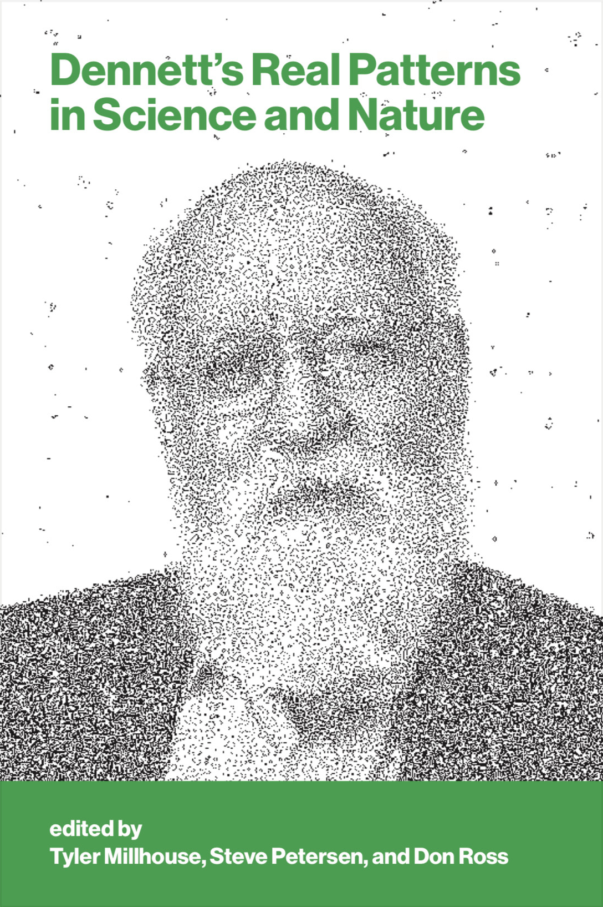
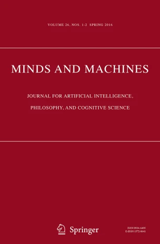

Publications
Books

Dennett's Real Patterns in Science and Nature
The explosive growth of AI and machine learning in recent decades is predicated on the recognition and exploitation of patterns in data. Of course, scientists have engaged in their own—less automated—processes of pattern recognition since the birth of science itself, and biological organisms evolved their own neural networks for pattern recognition long before people and their technology came along.
In his seminal work, “Real Patterns,” philosopher and cognitive scientist Daniel Dennett laid out a road map for connecting the idea of “patterns” as understood by information theory to the practices of scientists and to our own cognitive capacity to model and predict the world around us. In this book—the first dedicated to the topic of real patterns—Tyler Millhouse, Steve Petersen, and Don Ross follow this road map. They explore the relevance of patterns to important aspects of both science and nature, including the emergence of high-level structure in physics, the nature of biological species, the measurement of welfare in economics, the evaluation of causal models, and the possibility of understanding in large neural networks.
Journal Articles
Really Real Patterns
Dennett [1991] proposes a novel ontological account of the propositional attitudes—real patterns. Despite its name, the degree to which this account is committed to realism remains unclear. In this paper, I propose an alternative criterion of pattern instantiation, one that assesses the difficultly of faithfully interpreting a physical system as instantiating a particular pattern. Drawing on formal measures of simplicity and similarity, I argue that, for well-instantiated patterns, our interpretation will be computable by using a short program. This approach preserves the flexibility of Dennett's original, while offering substantially stronger realist commitments.
Compressibility and the Reality of Patterns
Daniel Dennett distinguishes real patterns from bogus patterns by appeal to compressibility. As information theorists have shown, data are compressible if and only if those data exhibit a pattern. Noting that high-level models are much simpler than their low-level counterparts, Dennett interprets high-level models as compressed representations of the fine-grained behavior of their target system. As such, he argues that high-level models depend on patterns in this behavior. Unfortunately, data scientific practice complicates Dennett's interpretation, undermining the traditional justification for real patterns and suggesting a revised research program for its defenders.
A Simplicity Criterion for Physical Computation
The aim of this article is to offer a formal criterion for physical computation that allows us to objectively distinguish between competing computational interpretations of a physical system. The criterion construes a 'computational interpretation' as an ordered pair of functions mapping (i) states of a physical system to states of an abstract machine, and (ii) inputs to this machine to interventions in this physical system. This interpretation must ensure that counterfactuals true of the abstract machine have appropriate counterparts which are true of the physical system. The criterion proposes that rival interpretations be assessed on the basis of simplicity. Simplicity is construed as the Kolmogorov complexity of the interpretation. This approach is closely related to the notion of algorithmic information distance and draws on earlier work on real patterns.

Virtual Machines and Real Implementations
What does it take to implement a computer? Answers to this question have often focused on what it takes for a physical system to implement an abstract machine. As Joslin (Minds Mach 16:29-41, 2006) observes, this approach neglects cases of software implementation—cases where one machine implements another by running a program. These cases, Joslin argues, highlight serious problems for mapping accounts of computer implementation—accounts that require a mapping between elements of a physical system and elements of an abstract machine. In this paper, I begin by clarifying the nature of software implementation and disentangling it from closely related phenomena like emulation and simulation. Next, I argue that Joslin overstates the degree of complexity involved in his target cases and that these cases may actually give us reasons to favor simplicity-based criteria over relevant alternatives. Finally, I propose a novel problem for simplicity-based criteria and suggest a tentative solution.
Book Chapters
The Problem of Platonic Codes
Across a wide body of work, Dennett proposes three stances from which we might predict the behavior of human beings and other complicated systems (see, e.g., Dennett 1971, 1989, 2009). In this chapter, I provide a novel information-theoretic motivation for the kind of stance-taking Dennett advocates, a motivation that bolsters the connection between stance-taking and ontology. For this purpose, I will consider the physical, design, and intentional stances collectively as distinct modes of the predictive stance. The predictive stance is taken by agents interested in predicting events in their environment, especially events that would result from possible actions. I will contrast this stance with the descriptive stance. The descriptive stance is taken by agents interested in efficiently representing events in their environment for the purpose of communication. As I will argue, it is only when we take the predictive stance that the world resolves into anything remotely recognizable (ontologically speaking).
Learnability and Moral Nativism: Exploring Wilde Rules
Moral nativists argue that moral rule learning is both enabled and constrained by an innate moral grammar. In this chapter, we explore a rule type that appears to be absent (or at least very rare) in human moral systems—Wilde rules. This concept was inspired by an aphorism attributed to Oscar Wilde, 'A gentleman never offends unintentionally.' The possibility of such a rule seems like an obvious result of an unconstrained hypothesis space for moral rule learning. On the other hand, the near-universal absence of Wilde rules seems like a phenomenon that is naturally suited to a nativist explanation in terms of constraints on learning. We propose that Wilde rules, despite their cross-cultural rarity and counterintuitive character, can be learned, thereby challenging the nativist hypothesis.
The Containment Problem and the Evolutionary Debunking of Morality
Recent years have seen a dramatic increase in interest in evolutionary debunking arguments (or EDAs). EDAs follow a long tradition of concern about the implications of evolution for morality. Machery and Mallon (2010) hold that if it is not the case that morality evolved in the strong sense that a specifically moral form of cognition evolved, then there is little hope for EDAs. In the light of Machery and Mallon's (2010) challenge, we propose five alternative strategies for constructing EDAs. If these alternatives are successful, it would no longer be necessary to show that a specific capacity for moral cognition evolved.
Reports and Pre-Prints
Embodied, Situated, and Grounded Intelligence: Implications for AI
In August of 2021, the Santa Fe Institute hosted a workshop on collective intelligence as part of its Foundations of Intelligence project. This project seeks to advance the field of artificial intelligence by promoting interdisciplinary research on the nature of intelligence. The workshop brought together computer scientists, biologists, philosophers, social scientists, and others to share their insights about how intelligence can emerge from interactions among multiple agents--whether those agents be machines, animals, or human beings. In this report, we summarize each of the talks and the subsequent discussions. We also draw out a number of key themes and identify important frontiers for future research.
Frontiers in Collective Intelligence: A Workshop Report
In April of 2022, the Santa Fe Institute hosted a workshop on embodied, situated, and grounded intelligence as part of the Institute's Foundations of Intelligence project. The workshop brought together computer scientists, psychologists, philosophers, social scientists, and others to discuss the science of embodiment and related issues in human intelligence, and its implications for building robust, human-level AI. In this report, we summarize each of the talks and the subsequent discussions. We also draw out a number of key themes and identify important frontiers for future research.
Frontiers in Evolutionary Computation: A Workshop Report
In July of 2021, the Santa Fe Institute hosted a workshop on evolutionary computation as part of its Foundations of Intelligence in Natural and Artificial Systems project. This project seeks to advance the field of artificial intelligence by promoting interdisciplinary research on the nature of intelligence. The workshop brought together computer scientists and biologists to share their insights about the nature of evolution and the future of evolutionary computation. In this report, we summarize each of the talks and the subsequent discussions. We also draw out a number of key themes and identify important frontiers for future research.
Foundations of Intelligence in Natural and Artificial Systems: A Workshop Report
In March of 2021, the Santa Fe Institute hosted a workshop as part of its Foundations of Intelligence in Natural and Artificial Systems project. This project seeks to advance the field of artificial intelligence by promoting interdisciplinary research on the nature of intelligence. During the workshop, speakers from diverse disciplines gathered to develop a taxonomy of intelligence, articulating their own understanding of intelligence and how their research has furthered that understanding. In this report, we summarize the insights offered by each speaker and identify the themes that emerged during the talks and subsequent discussions.